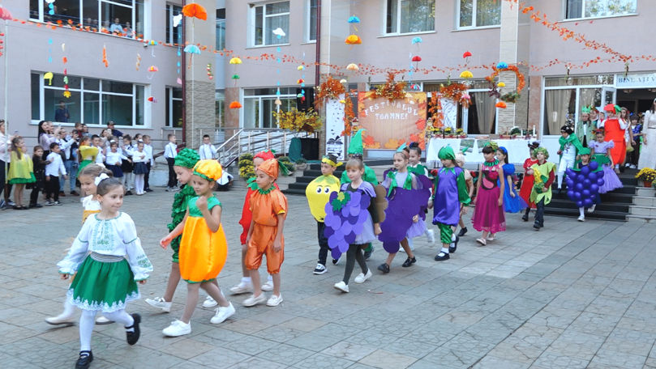

Ultimele Știri
Festivalul Toamnei la Liceul Teoretic „Mihai Eminescu” din Fălești
Pe 11 octombrie, Liceul Teoretic „Mihai Eminescu” din Fălești a găzduit Festivalul Toamnei, un eveniment
plin de culoare și bucurie. Elevii au prezentat tradiții locale și au împodobit standuri cu produse
tradiționale de sezon. La eveniment au participat și părinți, alături de profesori, într-o atmosferă
festivă dedicată toamnei.
„Festivalul a fost o oportunitate de a aduce comunitatea mai aproape și
de a învăța despre importanța recoltelor în viața noastră”, a declarat directorul școlii.
„Aici fac murături. Aici am curățit doi morcovul.
Ce o să faci cu morcovii?
Vreau să pun în borcan și să-i tai.
Am făcut un lupușor.
Și eu am făcut un lup.
Din frunză, hârtie colorată și ochi.
Vă place?
Da”, au spus copii.
În cadrul atelierului culinar, copiii au învățat rețete tradiționale de preparare a murăturilor.
„Murăm pentru iarnă murături din roșii, castraveți, mărar, țelină, hrean, usturoi, sare desigur și apa după rețeta tradițională”, a declarat un părinte.
„Al doilea an organizăm ateliere, unde copii sunt implicați de a confecționa din materiale naturale. Să danseze să pregătească bucate îndependență de ateliere”, a spus Aurelia Crolinschi, învățătoare.
Directoarea liceului, Cristina Tambur, a menționat că scopul acestui festival este de a familiariza noua generație cu tradiția.
„Astăzi, instituția noastră a prins culoare în cadrul proiectului Festivalul Toamnei ediția a doua. Acest eveniment educativ are menirea de a celebra anotimpul toamna, dar și să promoveze învățarea prin activități interactive. Elevii își vor îmbunătăți cunostințele despre natură și tradiții”, a menționat Cristina Tambur, directoarea LT „ M. Eminescu” or. Fălești.
La Liceul Teoretic „Mihai Eminescu” din orașul Fălești învață aproape 1400 de elevi.